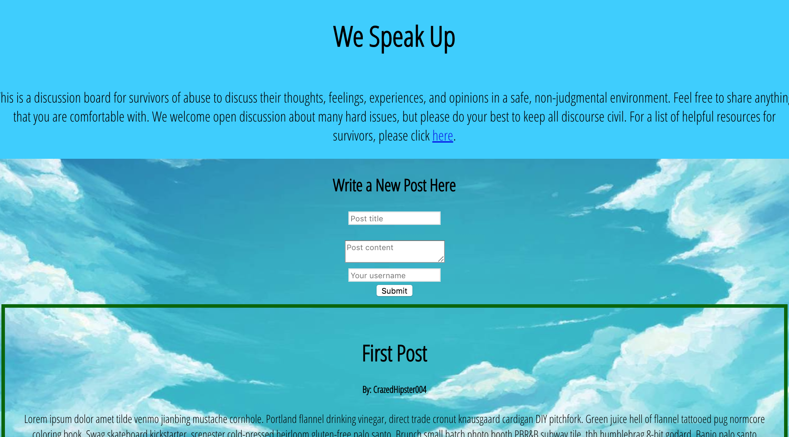
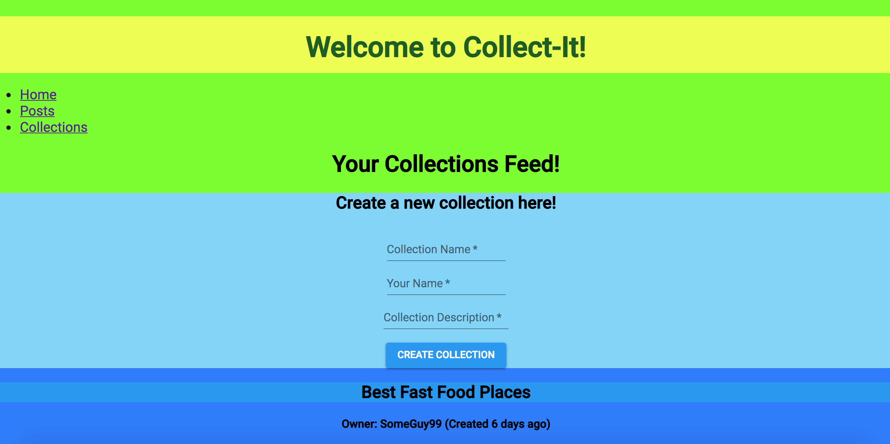
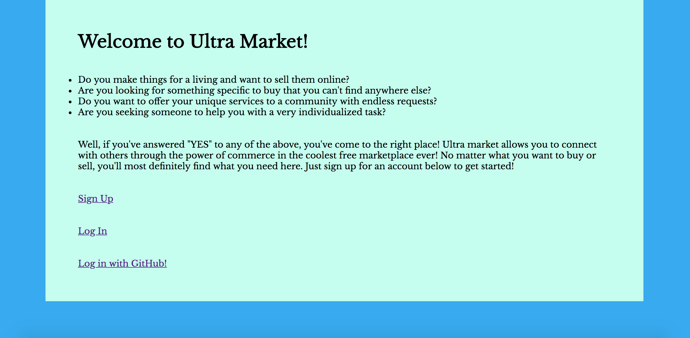

We Speak Up
We Speak Up is an online discussion forum for survivors of domestic and sexual abuse to share their experiences in a safe, non-judgmental environment. This app was built with a Rails backend and a React w/Redux frontend. It uses PostgresSQL for the database.
Share Able
Share-Able is a web app that allows users to write posts and create collections with items in them. Users must sign up with an account to use these features. This app was built using Rails for the backend and jQuery/AJAX for the frontend. It uses PostgreSQL for the database.
Collect-It
Collect-It is a web app that is similar to Share-Able in that it allows users to write posts and create collections. However, users do not need to create an account (for now) in order to have access to all the features of the site. This app was built with a Rails backend and a React w/Redux frontend. It uses PostgreSQL for the database.
Ultra-Market
Ultra-Market is an online marketplace where users can buy and/or sell anything they want. Users must first create a new account or sign in using their Github profile in order to use the website's features. This app was built with a Rails backend and jQuery/AJAX for the frontend. It uses PostgreSQL for the database.
Collect-Nation
Collect-Nation is a simple web app built with Sinatra that allows users to create an account and once logged in, be able to create collections to store items.